Панель Редактор Процессов позволяет добавлять и редактировать процедуры процессов.
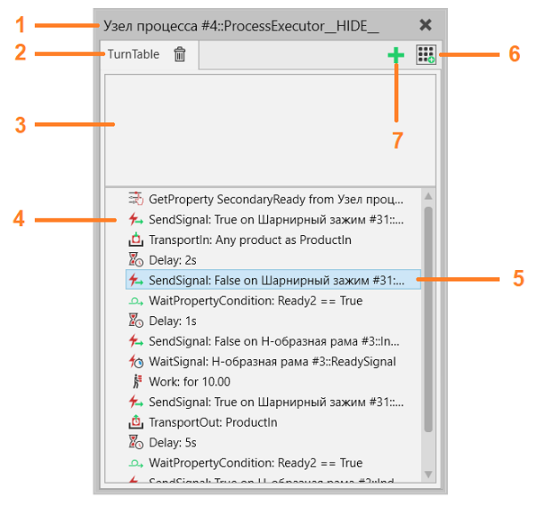
1. |
Имя компонента и поведение исполнителя процесса |
2. |
Название процедуры процесса |
3. |
Раздел требований |
4. |
Раздел определения процесса |
5. |
Выбранный оператор |
6. |
Галерея операторов |
7. |
Добавить процедуру процесса |

Доступ
Для доступа к Редактору Процессов:
·Нажмите на вкладку Процесс.
·В группе Редактор выберите команду Операции.
·Нажмите на ярлык процедуры процесса в окне 3D-просмотра.
1
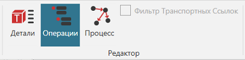
3.
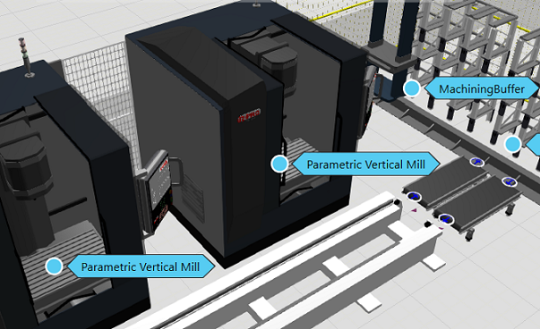
Процедуры процесса
Исполнитель процесса отвечает за выполнение одной или нескольких процедур процесса. Каждая процедура процесса является реализацией процесса, определенного именем процедуры. Все процедуры Процесса с одинаковым именем считаются одним и тем же Процессом.
Процедуры процесса сохраняются вместе с компонентом-владельцем в макете. Их можно добавить, нажав зеленый значок плюса.
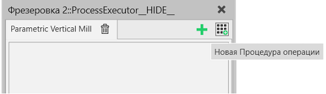
Редактирование Процедур Процесса
Операторы могут быть добавлены, отредактированы, переупорядочены и вложены в процедуру процесса.
При добавлении нового оператора он появится после последнего выбранного оператора в процедуре процесса. Если вам нужно изменить порядок операторов в процедуре, перетащите оператор до или после другого оператора. Место, где вы вставляете оператор, показано линией, которая также указывает, на каком уровне вы вставляете оператор.
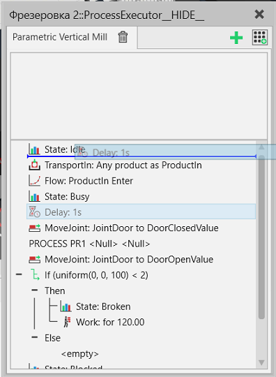
Операторы Требований
Операторы Требований являются операторами предварительных условий, и они используются для выбора того, какую процедуру процесса исполнитель будет запускать дальше. Процедура процесса может быть выполнена только после того, как все требования процедуры процесса будут выполнены одновременно.
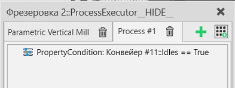
Выполнение Процесса
Каждая процедура процесса содержит набор последовательно выполняемых операторов в разделе определения процесса.
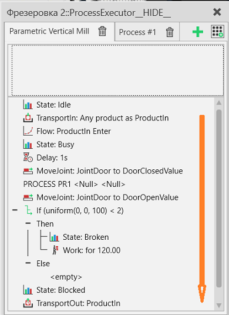
Исполнитель процесса одновременно выполняет только одну процедуру процесса. Процедуры процесса выполняются последовательно слева направо, если ни одно из требований не выполнено.
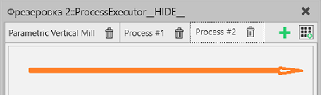
Когда процесс завершен, требования всех процедур процесса переоцениваются, чтобы выбрать следующую процедуру процесса для запуска. Если требования не выполнены, выполнение процесса переходит в режим ожидания.
Группы Процессов
Процедуры процесса с одинаковым именем автоматически входят в группу. Это упрощает подачу деталей в один и тот же процесс, но в разных компонентах.
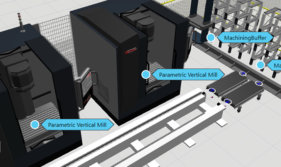
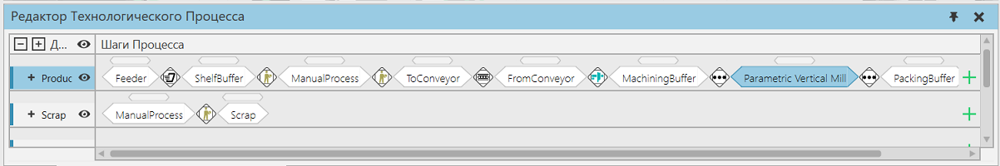
Имейте в виду, что процедуры процесса с одинаковым именем могут отличаться в плане их выполнения.
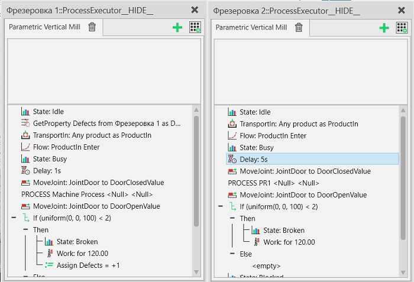
Переменные
Каждая процедура процесса имеет свой набор переменных, которые являются глобальными в ее области видимости. То есть все операторы, независимо от их вложенности в процедуру процесса, могут ссылаться на переменные этой процедуры.
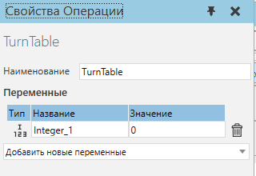
!!!Обратите внимание, что поле Значение предназначено только для чтения. Его установка не влияет на значение при запуске симуляции, поскольку значения сбрасываются при запуске и при сбросе симуляции. Используйте оператор Присвоить переменной (Assign) для инициализации значений переменных (один из вариантов представлен на рисунке ниже).
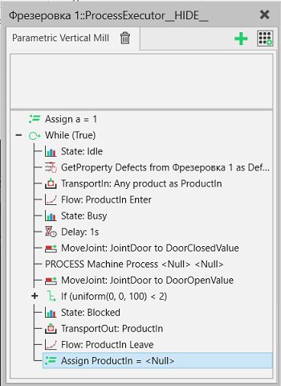
Имейте в виду, что процедура процесса может содержать также переменные выполнения, такие как ProductIn, для указания продукта в этом процессе. Переменные выполнения создаются различными операторами по мере необходимости и автоматически удаляются при перезагрузке симуляции.
Так же стоит учесть, что переменная типа ProductIn преобразуется в список оператором TransportIn, если в переменной уже есть значение. В тех случаях, когда это не требуется (к примеру в циклах) нужно обнулить переменную ProductIn и при следующей итерации в ней снова будет создано значение, а не список.
Операторы
В окне Галерея Операторов отображаются операторы, которые можно добавить в выбранную процедуру процесса.
Название |
Описание |
|---|---|
Зарезервироват продукт (Reserve Product) |
Оператор требования, которое резервирует продукт для процесса. |
Состояние свойства (Property Condition) |
Оценивает соответствует ли значение свойства заданному условию, и запускает повторную оценку раздела требований, если значение свойства изменяется |
Транспорт В (Transport In) |
Транспортирует продукт(ы) в процесс. |
Транспорт Из (Transport Out) |
Транспортирует продукт(ы) из процесса. |
Начать транспортировку В (Start Transport In) |
Начинает транспортировку продукта в этот процесс. |
Начать транспортировку Наружу (Start Transport Out) |
Инициирует вывоз продукта(ов) из процесса. |
Ждать транспорт (Wait Transport) |
Ожидает завершения одного или нескольких операторов запуска транспорта. |
Транспортировака паттерна В (Transport Pattern In) |
Переносит шаблон продукции в процесс. |
Буффер (Buffer) |
Переносит продукты в шаблонный буфер и обратно. |
Освободить резервирование продукта (Release Product Reservation) |
Освободить предварительно зарезервированный экземпляр продукта, чтобы его можно было предложить другому процессу. |
Получить шаг процесса (CreateGetFlowStepStatementTextId) |
Оператор получает требуемый шаг процесса |
Найти шаг процесса (CreateFindFlowStepStatementTextId) |
Оператор находит требуемый шаг процесса |
Назначить шаг процесса (CreateSetNextFlowStepStatementTextId) |
Оператор устанавливает следующий шаг процесса для продукта |
Получить сборку (GetAssembly) |
|
Проверить сборку (CheckAssembly) |
Проверяет полностью ли собрана сборка в соответствии с текущим шагом сборки |
Получить свойство сборки (GetAssemblyProperty) |
Получает свойство шага сборки в переменную |
Создать сборку (Construct) |
Создает сборку |
Прикрепить (Attach) |
Прикрепляет продукт(ы) к родительскому продукту |
Открепить (Detach) |
Отделяет одну или несколько деталей от общего родительского продукта. |
Создать (Create) |
Создает новый продукт заданного типа и помещает его в определенный контейнер. |
Удалить (Remove) |
Удаляет данный экземпляр продукта. |
Изменить тип (Change Type) |
Изменяет тип определенного экземпляра продукта. |
Присвоить переменную (Assign Variable) |
Присваивает значение переменной. |
Пока (While) |
Оператор While. Определяет условие для выполнения группы операторов в цикле. |
Прервать (Break) |
Завершает выполнение цикла. |
Продолжить (Continue) |
Продолжает цикл с новой итерации. |
Если (If) |
Оператор If. Определяет условие if-then-else для выполнения одной группы операторов, если условие истинно, или другой группы операторов, если условие ложно. |
Переключатель случаев (Switch Case) |
Определяет несколько групп условных операторов и выполняет один из них на основе выражения значения. |
Добавить в конец списка (Append To List) |
Добавляет значения из одной переменной в другую переменную или создает новую переменную списка. |
Выбрать продукты (Select Products) |
Выделяет отфильтрованные типы продуктов из переменной в новую переменную. |
Получить продукты (GetProducts) |
Получает ссылку на продукт из контейнера компонентов. |
Переместить соединение (Move Joint) |
Перемещает выбранное соединение. |
Работа (Work) |
Резервирует ресурс из контроллера транспорта для работы в процессе в течение заданного времени. |
Получить свойствоx (Получить свойство) |
Создает новую переменную, связанную с переменной свойства в статическом компоненте для использования ее, например, в операторах управления процессом. |
Ждать Состояние Свойства (Wait Property Condition) |
Ждет, пока значение свойства не выполнит заданное условие. |
Установить матариал узла (Set Node Material) |
Изменяет Материал определенного узла в детали. |
Установить видимость узла (Set Node Visibility) |
Изменяет видимость определенного узла в одном или нескольких деталях. |
Задержка (Delay) |
Ожидание в течение заданного времени симуляции. |
Печать (Print) |
Отправляет сообщение на панель вывода. |
Комментарий (Comment) |
Комментарий. |
Остановка (Halt) |
Останавливает симуляцию. Может также использоваться для сброса симуляции. |
Послать сигнал (Send Signal) |
Посылает выбранный сигнал с заданным значением. |
Ждать сигнал (Wait Signal) |
Ждет, пока не сработает заданный сигнал со значением, соответствующим условию. |
Выполнить процедуру робота (Run Robot Routine) |
Ожидает пока выбранный робот не будет бездействовать, а затем запускает выбранную программу |
Установить состояние (Set State) |
Установка состояния поведения статистики. |
Процесс (Flow) |
Управляет статистикой процесса в машине. |